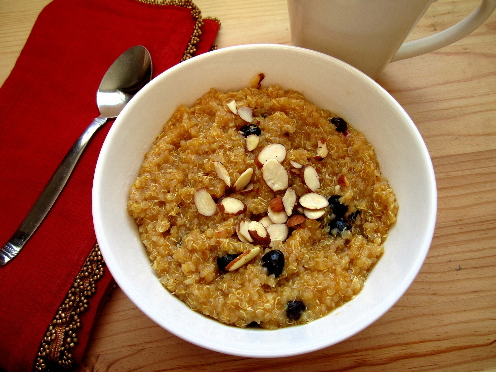
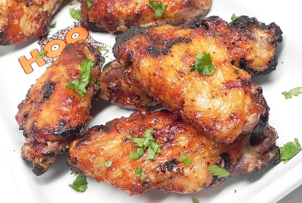
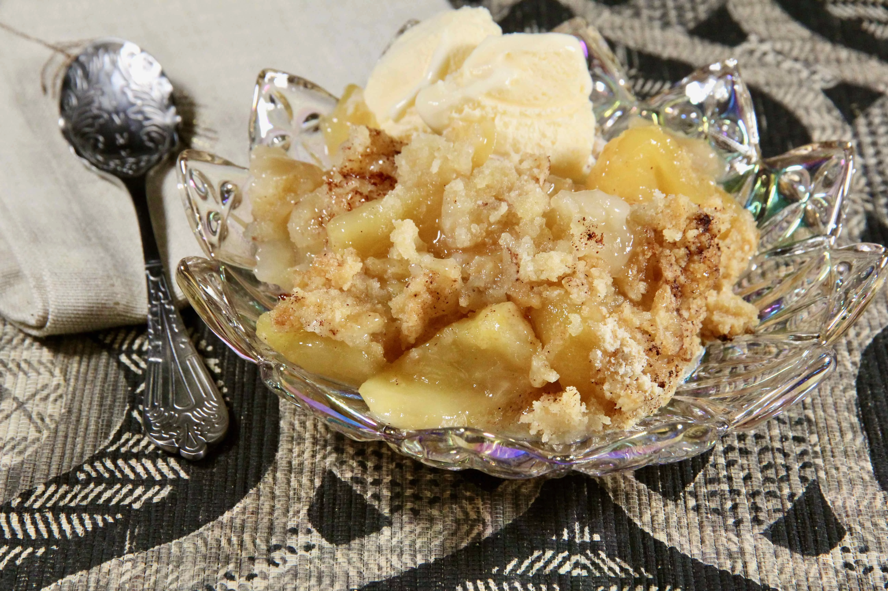

Odin recipes
 A delicious spaghetti dish with large shrimp in a tomato sauce. Perfect dish to cook if you are having guests
A delicious spaghetti dish with large shrimp in a tomato sauce. Perfect dish to cook if you are having guests
Shrimp Spaghetti with tomato sauce

If you haven't tried quinoa for breakfast yet, you're missing out on a tasty and comforting way to start your day.
Instant Pot Pumpkin Quinoa Porridge

This BBQ sauce is unexplainable. Its not a rich BBQ but not quite a honey BBQ either. You'll love these!
BBQ Chicken Wings

Nanas appecrumblepie